Nessus Vulnerability Scanning Lab
Vul Scanning · Nessus Essentials · Network Discovery · Reporting
Ran authenticated Nessus scans on Metasploitable and analyzed vulnerabilities.
➜ Learn more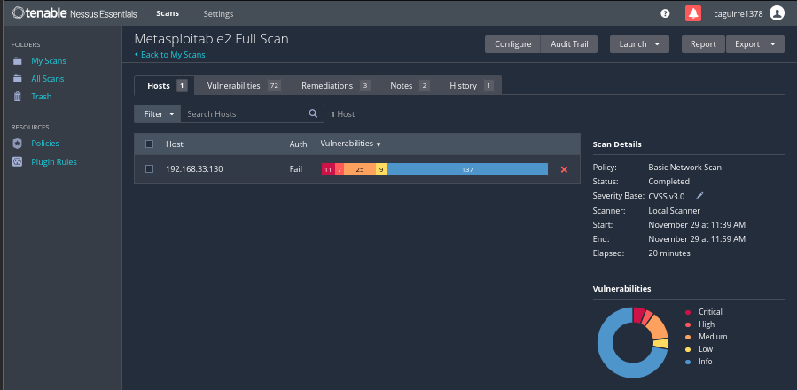
I am an IT support focused professional with hands on experience in troubleshooting, system operations, and log analysis. I’ve built labs using tools like Microsoft Sentinel, Sysmon, Active Directory, and Azure to better understand system activity and basic security monitoring.
In my current role supporting a federal facility, I coordinate technical issues, support users, and work with vendors and infrastructure teams to keep systems running smoothly. This has strengthened my ability to troubleshoot, communicate clearly, and work in structured environments.

SY0-701 · Active
Industry standard certification validating skills in threat detection, SIEM operations, incident response, identity management, and security monitoring.
Google · Professional Certificate
Focused on predictive modeling, machine learning, Python analysis, and data driven decision making.
Google · Professional Certificate
Covers SQL, Tableau, data cleaning, dashboards, and analytics workflows used in business environments.
Vul Scanning · Nessus Essentials · Network Discovery · Reporting
Ran authenticated Nessus scans on Metasploitable and analyzed vulnerabilities.
➜ Learn more
ServiceNow ITSM · Incident · Problem · Change · Governance
Configured a full ITSM environment with workflows, assignment rules, and change management processes.
➜ Learn more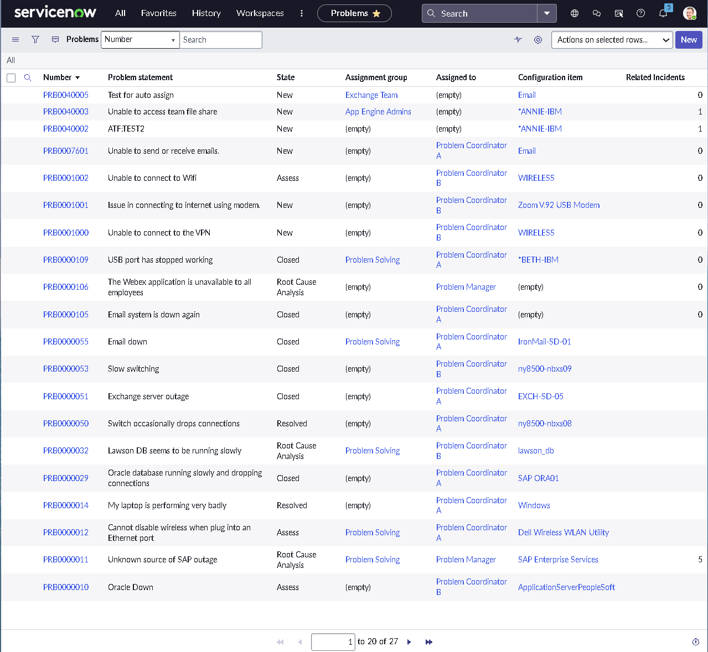
Entra ID · IAM · RBAC · Audit Logs
Simulated identity lifecycle, role assignments, and audit tracking.
➜ Learn more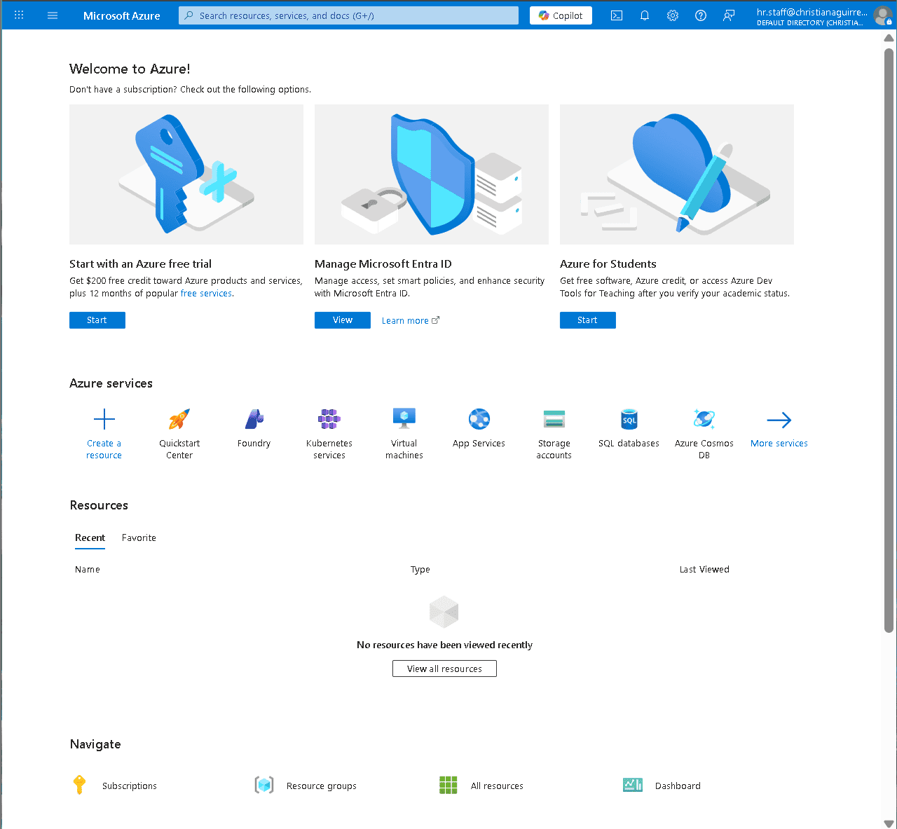
SOC Lab · Azure VM · Sentinel · KQL
Deployed honeypot VM and analyzed attack activity using Sentinel.
➜ Learn more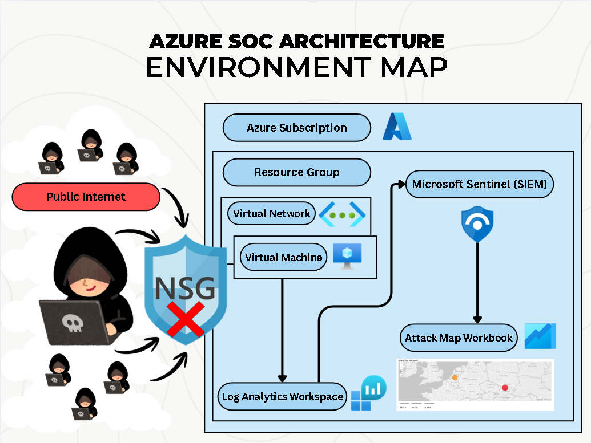
Windows Server · AD DS · DNS · IAM
Built domain, users, groups, and performed helpdesk tasks.
➜ Learn more
Python · Machine Learning · SHAP
Built predictive models to identify customer churn drivers and used SHAP for explainability.
➜ Learn more
Windows 10 · Sysmon · MITRE ATT&CK
Simulated attacker behavior and analyzed system activity using Sysmon logs.
➜ Learn more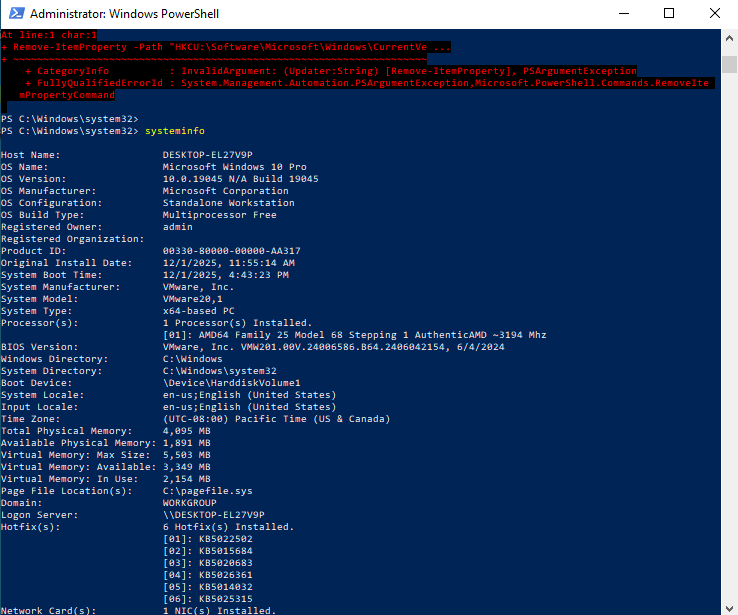
Excel · KPI · Analysis
Built dashboards and analyzed cost and performance metrics using Excel.
➜ Learn more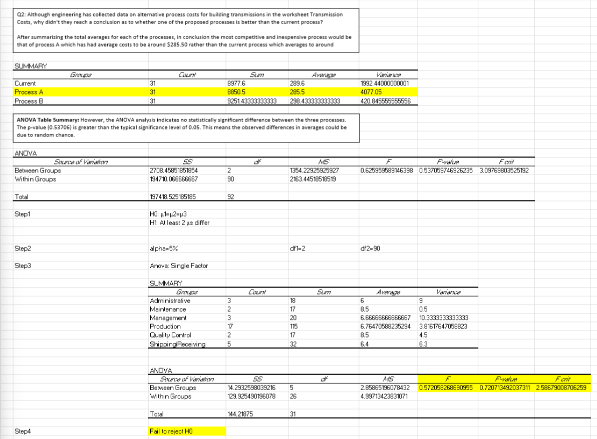
R · Tableau
Analyzed rider behavior patterns and built dashboards to highlight trends.
➜ Learn more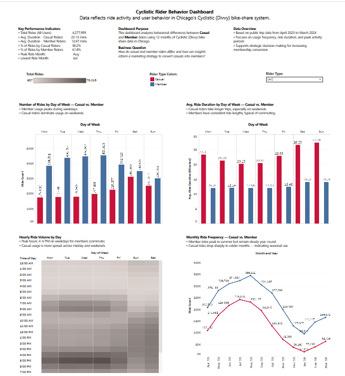
Fitbit Data · Analytics
Explored user activity and engagement trends to generate product insights.
➜ Learn more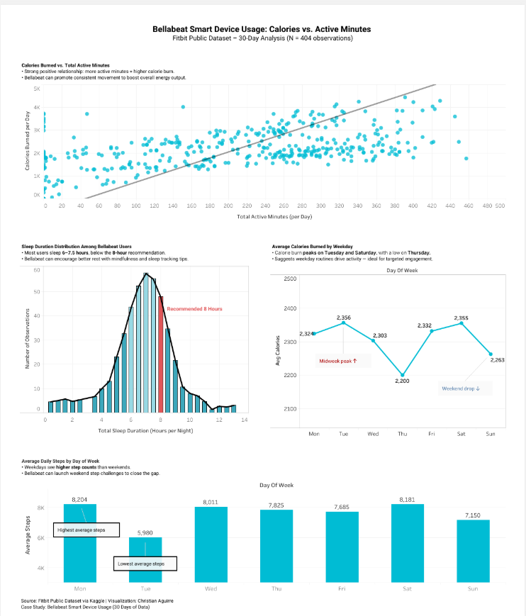
SQL Server · ETL
Redesigned and optimized database structure for reporting and analytics.
➜ Learn more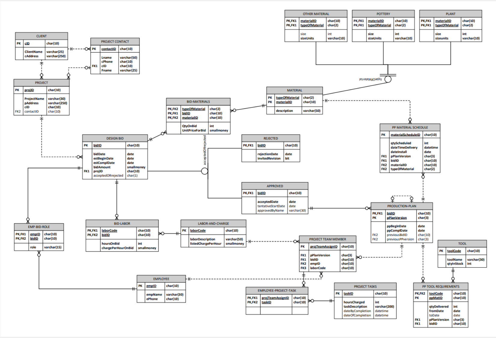
SQL · Data Cleaning
Cleaned and standardized large datasets for reliable business analysis.
➜ Learn more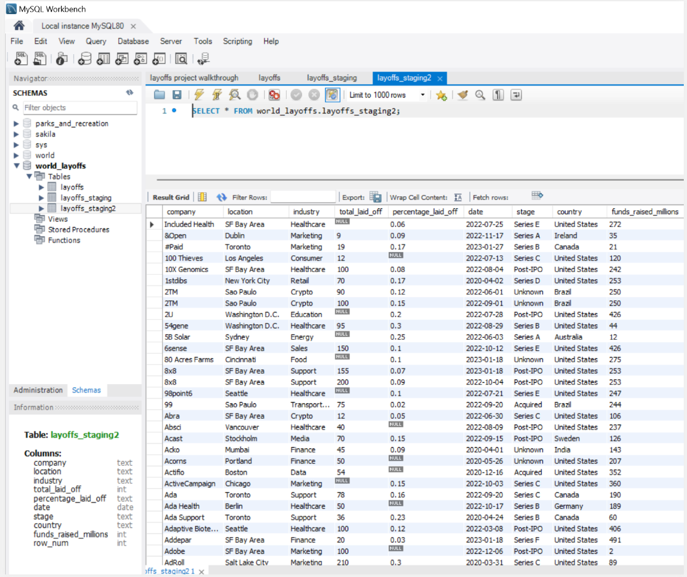
Excel · Simulation · Modeling
Built models using simulation and optimization to support decision making.
➜ Learn more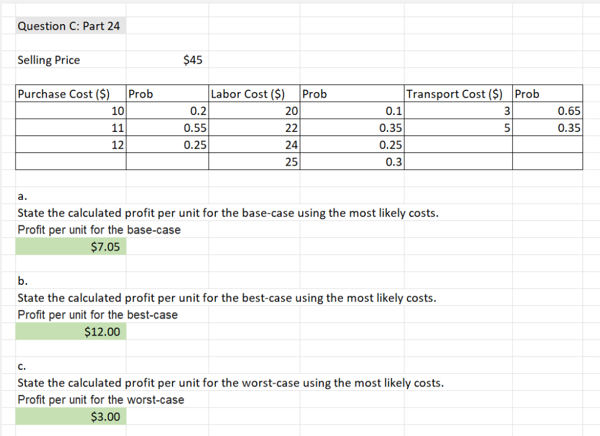
GBA Associates LP · Defense Health Headquarters
Oversee daily facility operations, coordinate vendors and contractors, manage work orders, and support building maintenance and infrastructure projects across a federal campus.
March 2025 — Present
Falls Church, Virginia · on site
Lowe’s Companies, Inc.
Supported contractors and business customers with quotes, orders, and material coordination. Helped plan deliveries and resolve issues on tight timelines.
January 2022 — March 2025
Fairfax, Virginia
Lowe’s Companies, Inc.
Assisted customers with product selection, maintained inventory, and ensured a safe and organized sales floor.
January 2021 — December 2022
Fairfax, Virginia
For roles in security operations, IT systems analysis, or data analytics. I’m happy to discuss opportunities, projects, or hands on lab work.
Location
Fairfax, Virginia, United States
cj.aguirr3@gmail.com
GitHub
github.com/cjaguirreMap reference for Fairfax, Virginia